BRIDGE CONSOLE TV
Your TV, with a starship console interface. A remote-friendly Android TV launcher inspired by LCARS, with animated starfields and optional Home Assistant controls.
Free preview · Android TV 8.0 or newer · Tested on onn 4K Pro
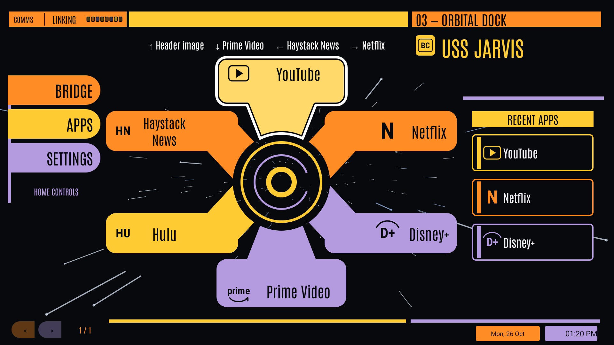
Actual native launcher capture using a temporary media-app arrangement. Apps shown are installed separately; your apps and theme colors can be customized.
MAKE IT YOUR BRIDGE
Ten LCARS screen layouts, a classic layout, selectable palettes, app pinning, folders and search.
STARS IN MOTION
Animated backgrounds and a starfield screensaver, adjustable speeds, and optional flying objects.
YOUR HOME, WITHIN REACH
Optional Home Assistant integration. Reveal compact controls, then press again for the full controls popup.
CHOOSE YOUR BRIDGE
Ten LCARS layouts and the classic bridge. These are native captures from the same onn 4K Pro using a temporary arrangement of installed media apps. Open any image at full resolution.

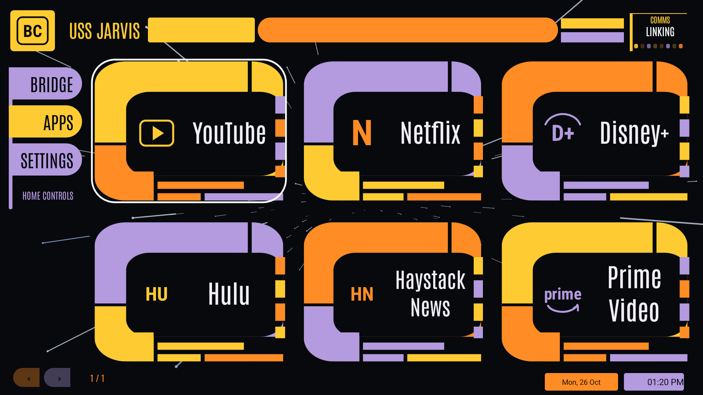

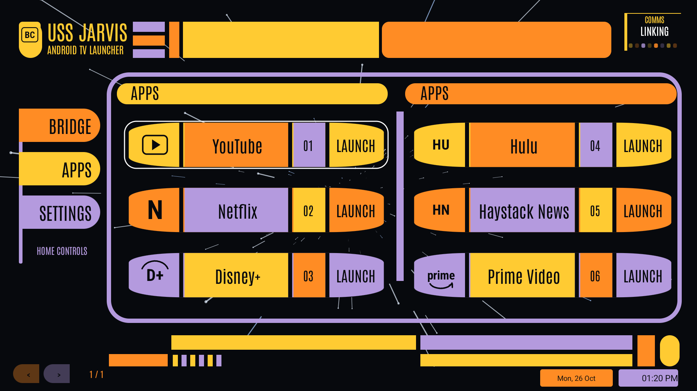


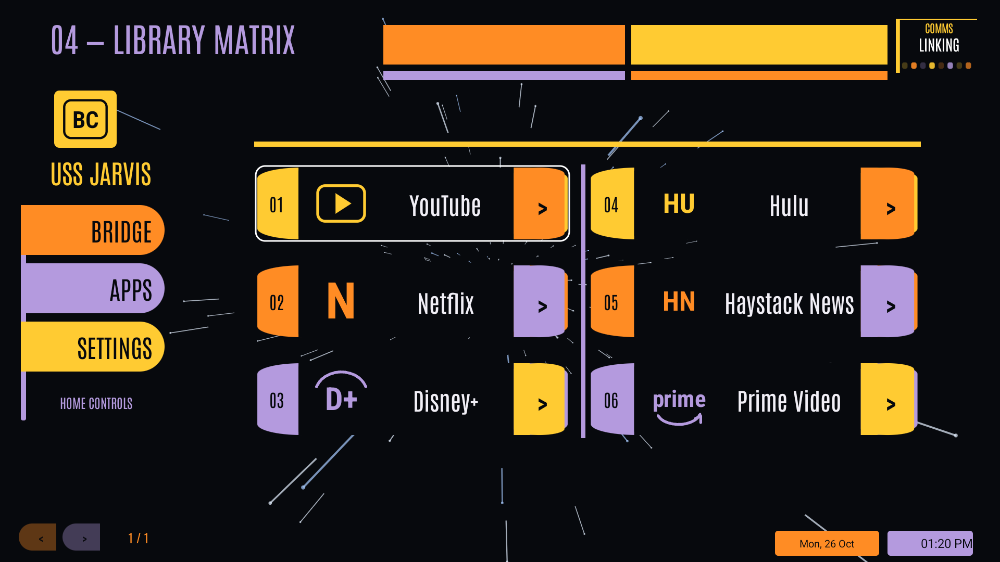

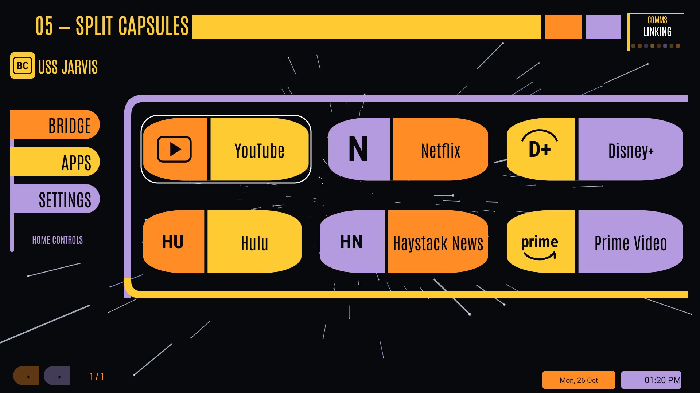

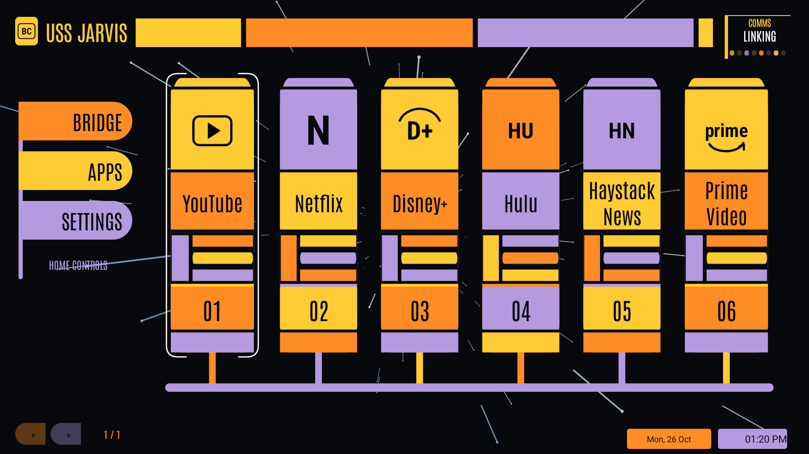

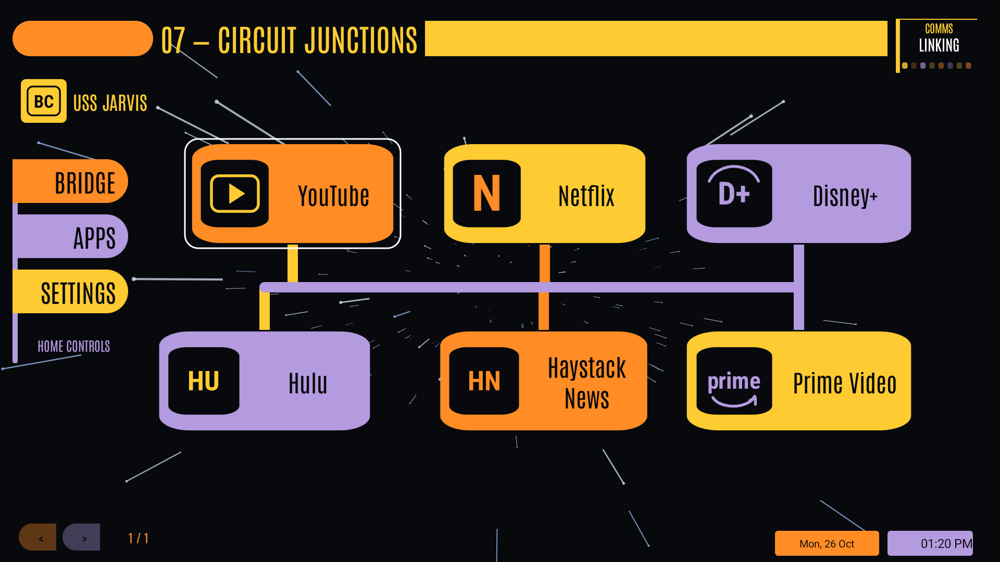

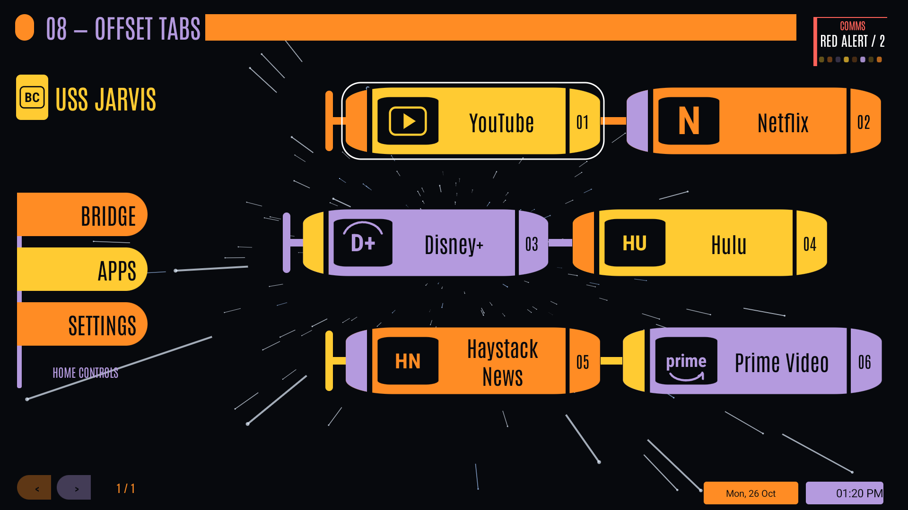

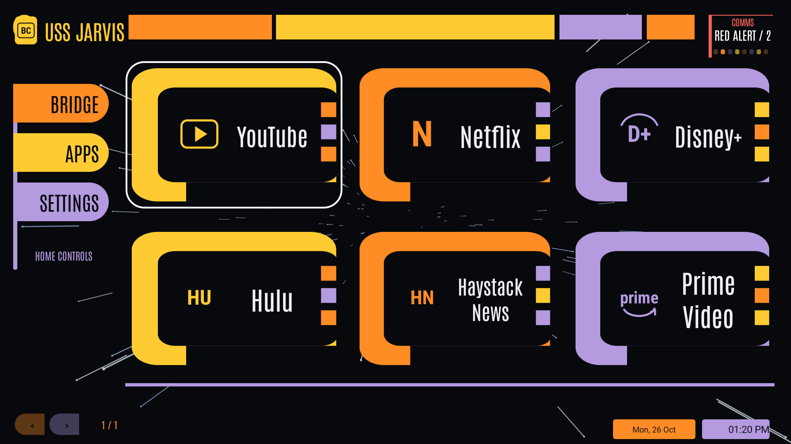

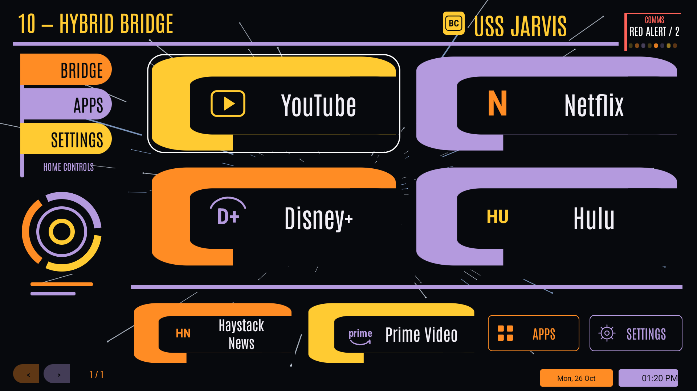

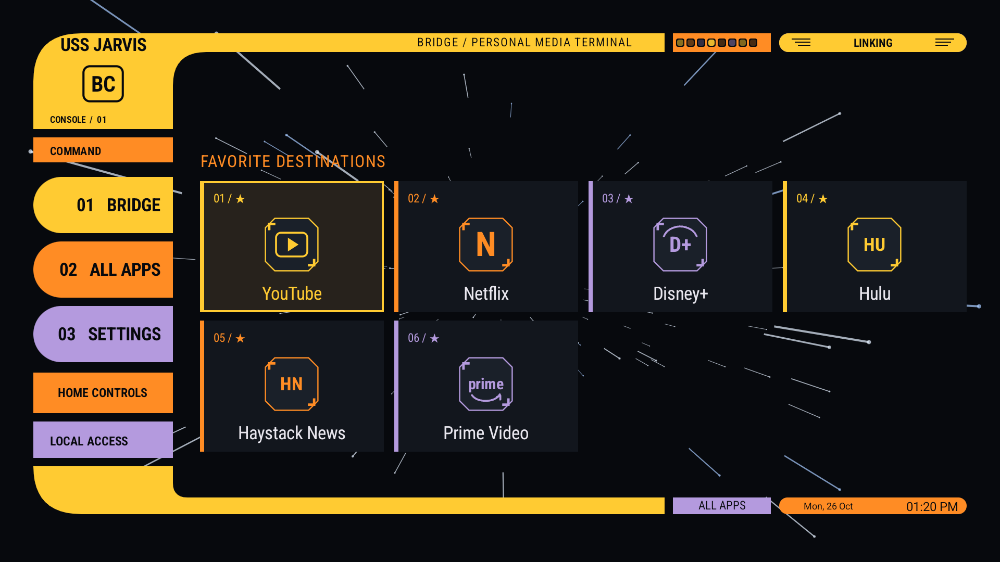
INSTALL THE PREVIEW
- Download BridgeConsoleTV.apk to your Android TV, or transfer it from your computer or phone.
- Open the APK with a browser or file manager. If Android asks, allow that application to install unknown apps, then install Bridge Console TV.
- Open Bridge Console TV from your apps list and try remote navigation, themes and settings.
- Default-launcher setup varies by TV. Confirm the app works on your device before changing your default Home app. onn setup instructions.
Home Assistant and notification access are optional and configured separately inside the app.
USE AS HOME ON YOUR ONN BOX
- Open Bridge Console TV → Settings → Android & device → Choose default home app. Select Bridge Console TV if Android offers the chooser.
- If that option is unavailable, use ADB on your own box to save the current Home component, set Bridge as Home, then verify the result and test your remote.
adb -s TV_ADDRESS shell cmd package set-home-activity --user 0 lab.jackson.lcars/.MainActivityReplace TV_ADDRESS with your own box's entry from adb devices. Keep the original launcher installed. The complete guide includes connection setup, saving the previous Home setting, verification, undo and a tvQuickActions Home-button alternative.
Menu names and Home behavior vary by firmware. Remapping Home with another app is a workaround; it does not by itself change Android's registered default launcher.
STILL A WORK IN PROGRESS
This is an early public preview. The interface is being refined, and Android TV devices differ in launcher integration and widget support. Screenshots show one tested device; compatibility with every TV is not claimed.
SUPPORT THE PROJECT
Enjoy turning your TV into a bridge console? You can support development through PayPal. Donations are optional; no donation is needed to download or use this preview.